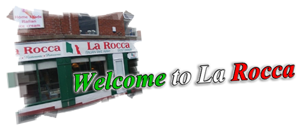
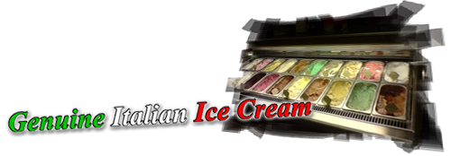
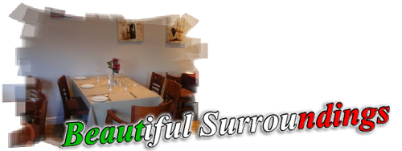
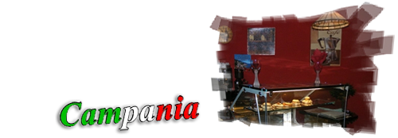

Welcome to La Rocca the home of authentic Italian recipes.
La Rocca have been trading as a take away company since October 2004
and since then proud owners Arturo and Linda Manzione have expanded
their business to opening
La Rocca restaurant, which was opened in January 2008.
The food at La Rocca is amazing, it is real Italian family cooking.
Arturo coming from Campania in Italy
himself, brings to the restaurant his secret
family pizza recipe, creating the finest pizzas around.
With the choice to eat in our upstairs restaurant, or take
out you can have the perfect evening with
the perfect food!

Also available at La Rocca Restaurant and Take Away
is home made, authentic Italian ice cream (genuine Artisan Gelato).
With a wide variety of flavours to choose
from you won't be disappointed!
Ask inside for details and flavours.
Other desserts are also available
at La Rocca, see our desserts menu
inside the restaurant or ask a waiter/waitress for
our dessert of the day.
If you have any food allergies
please ask for advice, as we
will always try to accommodate you.

La Rocca Restaurant is situated
on Water Street in Chorley, opposite
the all seasons sports centre.
Our Restaurant is above
La Rocca Take Away, and is a great
choice for a fun family evening, or as a romantic
night out for two.
Arturo and Linda are always happy
to help, and they give the restaurant
that friendly feel a restaurant needs.
It is easy to walk to and easy to park when
visiting La Rocca.
Take a look at our contact
page to get directions, or to book a table.

You have three choices when visiting La Rocca.
You can dine in our restaurant, come to our
take away shop and collect food, or have
your meal delivered to your door.
We deliver to various areas (delivery charges may apply)
take a look at our take away
menu for more information.
If you visit the La Rocca restaurant
our opening hours are Monday - Saturday 5.00pm till 10.00pm, or
Sunday 12.00pm till 9.00pm.
Ask inside for our special menus, which vary at
different times of the year.

Campania is the second most populous region
in Italy, it is located on the Italian Peninsula, with
the Tyrrhenian Sea to the West.
Campania is rich in culture especially
in regards to its ancient sites such as Pompeii, and
its architecture and music.
Campania is known for is cheeses including
Mozarella, and its Pizzas and Spaghetti
(all pizzas made at La Rocca are made with 100% mozarella cheese).